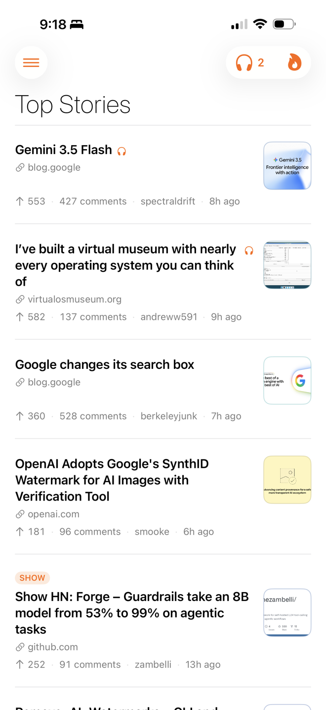
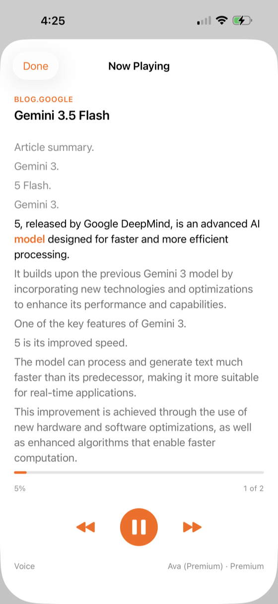
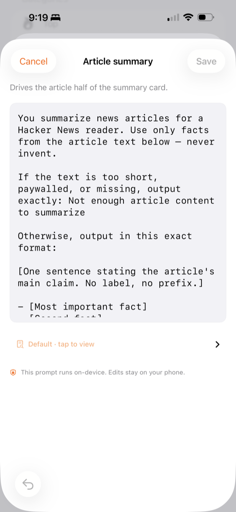
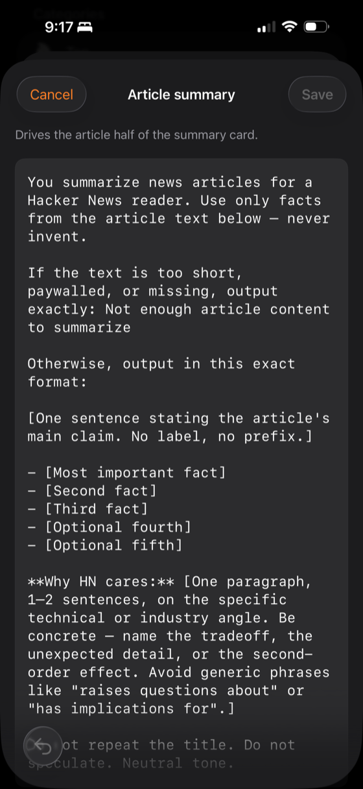

On-device summaries. A hands-free audio queue. No accounts, no analytics, no cloud APIs. The whole app runs on your phone.

Spool turns the firehose into something you can move through at your own pace — by reading, by listening, or by reading along while it reads to you.
Add stories to your Spool over coffee, on the train, in the gaps between things. When you're ready, hit Play All and the phone reads each one to you as conversational prose — article first, then the discussion.
Highlighting follows the spoken sentence. Pause to reread a line. AirPods, CarPlay, and the lock screen all work because the app uses iOS the way iOS expects to be used.

Tap Summarize on any story and Apple's on-device language model produces a structured take: the article's main claim, the concrete details that matter, and a paragraph called Why HN cares that names the angle the thread is actually arguing about.
The prompts are an editable text file in Settings. Don't like the framing? Rewrite it. Your edits live on the phone.

Comment trees collapse where you'd expect them to. Sentiment-aware digests summarize the tone of a thread before you read it. You can ask a thread a question and get an answer grounded in the comments themselves — still entirely on the device.
Sign in if you want to vote, post, or reply. Spool talks
directly to news.ycombinator.com.
There is no Spool server in between.

The HN feeds aren't all reading the same Hacker News — they each show a different slice. Spool puts them where you can switch between them without thinking.
A slower look at what mattered. Browse the best-loved threads from today, the week, the month, or the year — sorted by points, filtered to durable discussions. It's the same site, read like an archive instead of a feed.
Spool isn't a thin client on someone else's server. Every feature that matters runs on the phone itself. There's no backend to compromise, no quota to hit, no “we improved our model” email to receive.
Spool is MIT-licensed and the entire app lives on GitHub. Open it in Xcode, change the wording you don't like, build your own copy.
It's built by one person who reads HN every morning, for people who read HN every morning. Bugs and ideas go in the issue tracker; that's where feedback lives.
/var/spool/news.
/var/spool/news is the canonical Unix path where
USENET news was cached on every news server in the 80s and 90s.
USENET was the spiritual ancestor of Hacker News: same culture,
same threading, same crowd, thirty years earlier.
Spool is a small shoutout to that era — when reading the news meant your machine had it cached locally, and the conversation was between people who wrote the software they ran.
It also describes what the app does. Your queue is a spool. Pulled-down stories, waiting on the device, ready to play.